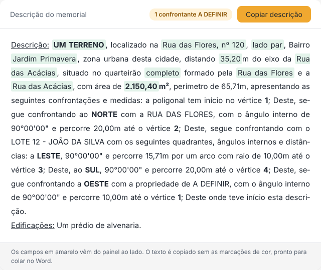
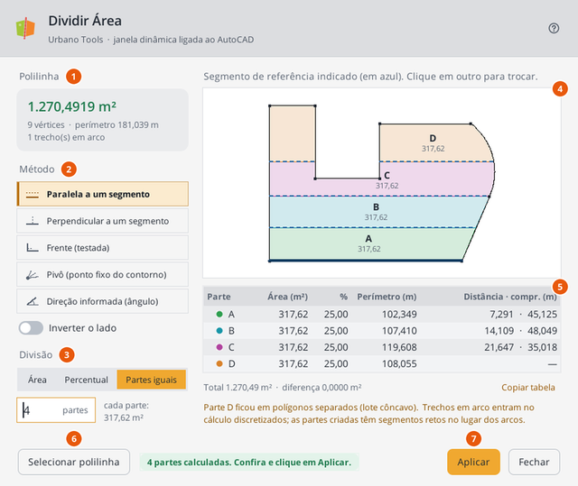
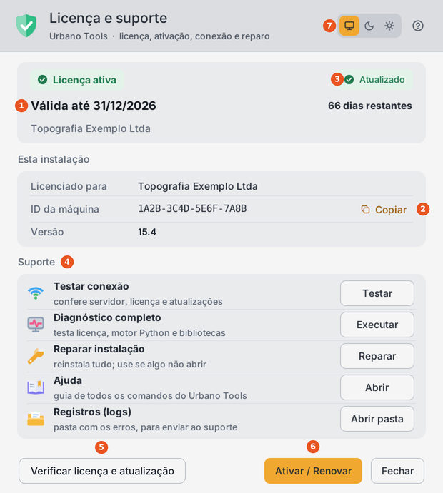
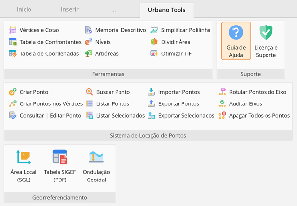

Chega de retrabalho e erros manuais no AutoCAD.
24 ferramentas que automatizam memorial descritivo, tabelas de coordenadas e confrontantes, divisão de área, locação de pontos e georreferenciamento — direto no seu desenho, a partir de uma aba no Ribbon.
Memorial descritivo, tabelas de coordenadas e confrontantes, numeração de vértices.
Divisão de área, locação de pontos, níveis e arbóreas com precisão.
Menos cliques, menos erro — mais tempo para o que importa.
Você ainda faz isso manualmente?
- Montar memorial descritivo copiando vértice a vértice do desenho
- Calcular quadrantes e preencher a tabela de confrontantes na mão
- Calcular divisão de área na mão e depois redesenhar
- Numerar vértices e cotar cada segmento do polígono um por um
- Lançar níveis de terreno bloco por bloco, ponto a ponto
- Digitar no desenho a tabela do memorial do SIGEF
Memorial Descritivo automático
Gere a Tabela de Confrontantes do lote, selecione as linhas no desenho e o Urbano Tools monta uma página com a tabela analítica e o texto do memorial, pronto para copiar para o Word.
- Distâncias, ângulos internos, confrontantes e quadrantes lidos da tabela
- Texto para Retificação ou Remembramento / Desmembramento
- Conferência do fechamento angular (tolerância de 10 segundos)
- O que falta preencher aparece destacado; Copiar descrição e pronto
- Exportação em HTML — abre no navegador

24 ferramentas, organizadas no Ribbon como no programa.
Cada botão resolve uma tarefa do seu dia a dia. Os ícones abaixo são os mesmos da aba Urbano Tools no AutoCAD.
Ferramentas
9 comandosVértices e Cotas
Numera os vértices da polilinha (V1, V2…) e cota cada trecho de uma vez. As cotas ficam ligadas à polilinha.
Numeração automáticaTabela de Confrontantes
Monta no desenho a tabela do lote com distâncias, ângulos internos, confrontantes e quadrantes. É a base do Memorial.
Quadrantes automáticosTabela de Coordenadas
Tabela analítica com distâncias, ângulos internos, coordenadas UTM e geodésicas, sempre no sentido horário.
UTM · Geodésicas · SIRGAS 2000Dividir Área
Janela dinâmica ao lado do desenho, com prévia ao vivo. Divide por área, percentual ou partes iguais, com corte paralelo, perpendicular, pela testada, por pivô ou por ângulo. A polilinha original não é alterada.
Paralela · Pivô · Ângulo · TestadaNíveis
Desenha o símbolo de nível com a cota (com vírgula) ao lado dos pontos COGO do Civil 3D — todos de uma vez pelo código ou ponto a ponto.
Pontos COGOArbóreas
Importa o levantamento arbóreo de um TXT, insere os blocos, guarda copa, tronco e altura e gera a tabela completa, compacta ou em 2 colunas.
Levantamento arbóreoSimplificar Polilinha
Tira os vértices desnecessários (Douglas-Peucker) com a tolerância que você escolher, com prévia e relatório do que mudou no perímetro e na área.
Curvas de nível · GPS · droneOtimizar TIF
Grava uma cópia comprimida de ortofoto, imagem de satélite ou drone (até cerca de 85% menor), mantém o georreferenciamento e insere a imagem no lugar certo.
Sem perder georreferênciaMemorial Descritivo
Lê as linhas da Tabela de Confrontantes e gera a página do memorial, com o texto pronto para Retificação, Remembramento ou Desmembramento.
Exporta HTMLSistema de Locação de Pontos
12 comandosPontos com nome, cota e descrição: criar, editar, buscar, listar, importar, exportar, rotular eixos e auditar erros.
Georreferenciamento
3 comandosÁrea Local (SGL)
Calcula a área no Sistema Geodésico Local, do jeito que o SIGEF/INCRA calcula, e mostra lado a lado com a área UTM para conferir com a certificada.
UTM → SGLTabela SIGEF (PDF)
Lê o memorial descritivo do SIGEF em PDF e desenha a tabela de azimutes, distâncias e coordenadas, igual à do memorial, sem recálculo.
Certificação ruralOndulação Geoidal
Calcula o fator N pela grade oficial do IBGE (hgeoHNOR2020, Imbituba), com interpolação bicúbica, para converter altitude elipsoidal e ortométrica. A grade já vem no programa.
Grade IBGE inclusaOndulação Geoidal no navegador
Converta altitude elipsoidal (GNSS) em altitude normal, e o contrário, pelo modelo hgeoHNOR2020 do IBGE. Abre direto no navegador, sem instalar nada.
Janelas claras, com prévia no desenho.
As janelas seguem o tema do AutoCAD (claro ou escuro), mostram o resultado antes de aplicar e não travam o desenho.


Uma aba no Ribbon. Nada de comando para decorar.

Depois de instalar, a aba Urbano Tools aparece sozinha, com quatro painéis: Ferramentas, Sistema de Locação de Pontos, Georreferenciamento e Suporte (Guia de Ajuda e Licença). Clique no botão e siga as instruções na linha de comando do AutoCAD.
Do download ao primeiro comando em 5 minutos.
Instalar
Rode o Setup_urbano-tools. Tudo vem dentro: o motor Python e as bibliotecas já estão no instalador.
Abrir o AutoCAD
A aba Urbano Tools aparece no Ribbon. No Civil 3D 2023 a 2027 o instalador configura tudo.
Usar e ativar
Os 3 dias grátis começam sozinhos. Para continuar, envie o ID da máquina pelo WhatsApp e ative.
Por que confiar no Urbano Tools
"Comecei a programar essas rotinas porque cansei de perder horas fazendo na mão tarefas que o computador resolve em segundos. No início era só pra mim — hoje compartilho porque sei que outros topógrafos enfrentam o mesmo aperto que eu enfrentava."
Experimente 3 dias grátis e conte como foi — publicamos aqui.
Urbano Tools
Todas as ferramentas. Suporte incluído. Atualizações contínuas.
Instalação simples · Suporte incluído · Atualizações contínuas · Cancele a qualquer momento
- Memorial Descritivo automático com exportação HTML
- Tabelas de confrontantes e de coordenadas (UTM e geodésicas, SIRGAS 2000)
- Divisão de área por paralela, perpendicular, testada, pivô ou ângulo
- Sistema completo de locação de pontos (12 comandos)
- Vértices e cotas, níveis, arbóreas e simplificação de polilinha
- Área Local (SGL), Tabela SIGEF (PDF) e Ondulação Geoidal (IBGE)
- Otimização de GeoTIFF sem perder o georreferenciamento
- Guia de Ajuda dentro do AutoCAD, em todas as ferramentas
Perguntas antes de assinar
Funciona no meu AutoCAD?
Como recebo o instalador e como funciona o teste grátis?
Preciso instalar Python ou algum programa extra?
E se eu cancelar?
As ferramentas recebem atualizações?
Preciso de internet para usar?
Tenho suporte se travar em algo?
Encontrou um bug? Tem uma ideia? Precisa de algo sob medida?
Bugs, sugestões e melhorias
Se encontrar algum comportamento inesperado ou tiver ideias de novas funcionalidades, é só avisar — fico feliz em atender. Se precisar adaptar alguma rotina ao padrão do seu escritório, resolvemos juntos.
Tem uma rotina que quer automatizar?
Se há algum processo repetitivo no AutoCAD ou no seu fluxo de trabalho que consome tempo, vamos conversar. Juntos criamos a automação certa e reduzimos o tempo gasto na sua operação.
Canal Urbano Tools no YouTube
Tutoriais de cada ferramenta, a instalação completa do zero ao primeiro comando e as novidades a cada lançamento. Ative o sininho para saber quando o primeiro vídeo sair.